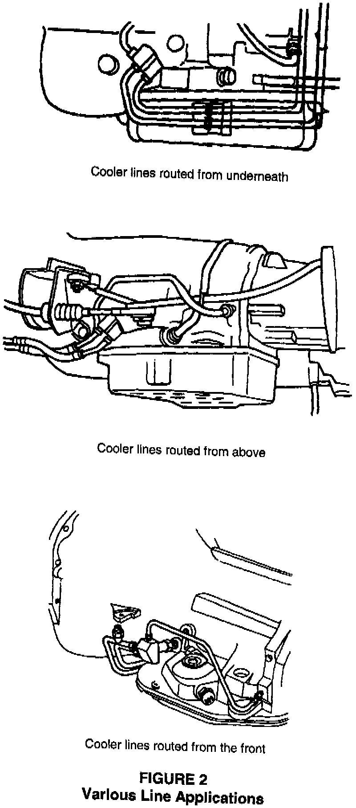

Bypass Kit Installation
1. Record all radio pre-sets and disconnect the negative battery cable.2. Raise the vehicle for access to the transmission housing. The bypass assembly will be connected to the existing transmission lines and mounted to the transmission housing by means of a bypass adapter.
3. During this installation procedure, some transmission fluid will be lost when the transmission cooler lines are cut (allowing bypass assembly installation). Take proper precautions and check transmission fluid fill level upon completing the installation.
4. It the cold weather bypass kit has provision for an in-line temperature sensor, the threaded "therm-o-well" (in the pressure "P" line of the kit) must be plugged with either the temperature sensor from the existing transmission line or the standard pipe plug provided. Consequently, if the vehicle being serviced is equipped with a temperature sensor (i.e., heavy duty BR truck), remove the temperature sensor from the existing line by un-threading and install it in the "pressure" line provided with the kit. Use Mopar Thread Sealant, p/n 04318044, to ensure a leak free seal.
5. Disconnect the pressure and return lines from the transmission housing fittings.
6. Remove and discard the fittings from the transmission housing.
7. Apply Mopar Thread Sealant, p/n 04318044, to the threaded bypass adapter (# 2 Figure 1).
8. Install the threaded bypass adapter securely into the front pressure port of the transmission housing and torque to 17.6 Nm (13 ft. lbs.).
9. Make sure the snap ring and O-ring are properly installed in their respective grooves on the nose of the bypass assembly block. Lubricate the O-ring with ATF.
10. Position the bypass assembly block such that the return port fitting "R" is pointed directly up and the two other fittings are pointed forward.
11. Firmly press the male nose of the bypass assembly into the female body of the threaded bypass adapter until it snaps into place. After snapping into place, the bypass assembly is permanently attached to the adapter.
NOTE:
THE BYPASS ASSEMBLY CAN ROTATE INSIDE THE ADAPTER, AND REMOVAL OF THE BLOCK FROM THE TRANSMISSION HOUSING (IF REQUIRED) CAN BE ACCOMPLISHED BY UN-THREADING THE ADAPTER.
CAUTION:
IF FLUSHING THE BYPASS ASSEMBLY IS REQUIRED, IT MUST BE REMOVED FROM THE TRANSMISSION HOUSING AND FORWARD FLUSHED ONLY. FAILING TO REMOVE THE VALVE AND REVERSE FLUSHING WILL RESULT IN TRANSMISSION FAILURE BY PLUGGING THE BYPASS VALVES INTERNAL ORIFICE AND DRAIN BACK VALVE.
12. Apply Mopar Thread Sealant, p/n 04318044, to the threaded end (transmission housing end) of the compression fitting.
13. Install the threaded compression fitting securely into the rear return port of the transmission housing and torque to 17.6 Nm (13 ft. lbs.).

14. Using a small tubing cutter, cut the existing pressure line at approximately 120 mm (5 in.) from the transmission housing end. Repeat the procedure for the existing return line.
CAUTION:
AFTER CUTTING THE PRESSURE LINE, MARK IT WITH A PIECE OF TAPE FOR IDENTIFICATION.
15. Identify the proper return line ("R" line) by using the marked labels attached to the tubes.
16. Connect the "R" line to the bypass assembly block and the rearward return port of the transmission housing. Tighten the compression fitting finger tight, and then wrench tighten it an additional 1/2 turn. Tighten the inverted flare nut to 6.78 Nm (60 in. lbs.).
17. Select the appropriate "RR" and "P" tubes for the application. Mixing or matching may be required to provide the best routing for your application.
18. Loosely connect the pressure line "P" to the pressure port fitting "P" on the bypass assembly block.
19. Loosely connect the radiator return line, "RR" to the "RR" port fitting, on the bypass assembly block.
NOTE:
DURING THE INSTALLATION OF THE "P" AND "RR" LINES, THE ORDER MAY BE REVERSED TO AID IN THE ASSEMBLY PROCESS.
NOTE:
ON 5.2L ZJ MODELS, THE THROTTLE VALVE CABLE AND BRACKET MAY REQUIRE REMOVAL FOR BYPASS TUBE CLEARANCE. ONCE THE TUBES ARE INSTALLED LOOSELY, INSTALL THE BRACKET AND THROTTLE VALVE CABLE. MAKE ANY ADJUSTMENTS FOR CLEARANCE AND TIGHTEN THE BYPASS TUBES AND BRACKET ASSEMBLY.
20. Make sure that the existing return line is properly re-attached to the hanger bracket and lay the new return line, "RR", beside it.
21. Install the hose bracket (# 12 in Figure 1) required for the overhead line application. The bracket will replace the existing bracket at the starter mount location. It may require slight modification to provide the best clearance from the exhaust system.
22. Attach clamp (# 11 in Figure 1) and the rubber hose to the "RR" tube to determine the approximate rubber hose routing. For connection to the existing return line, the line may be cut again to provide optimum line routing.
CAUTION:
WHEN ROUTING THE TUBING AND HOSE BE AWARE OF POTENTIAL MOVING COMPONENT INTERFERENCES, SUCH AS THE PROPELLER SHAFT, SHIFT LINKAGE IN ALL POSITIONS, TV CABLE, TV RETURN SPRING, AND TV LINKAGE. BE AWARE OF THE EXHAUST SYSTEM, ALL ROUTINGS SHOULD MAINTAIN AT LEAST ONE INCH OF CLEARANCE FROM THE EXHAUST SYSTEM.
23. Cut the rubber hose so that it has sufficient length to be attached to the existing return line.
24. Loosely connect a nut (# 7 in Figure 1), a compression sleeve (# 8 in Figure 1), and a hose fitting (# 10 in Figure 1) to the existing return line.
25. Using a clamp (# 11 in Figure 1), install the rubber hose onto the hose fitting (# 10 in Figure 1).
26. Evaluate the line routing to ensure moving components and exhaust will not interfere with the new lines. Make modifications as necessary to provide the best routing.
27. Disconnect the "RR" tube from the Bypass Block for access to the "P" port on the block assembly.
28. Attach a clamp and the rubber hose to the "P" tube and determine the approximate rubber hose routing. For connection to the existing pressure line, the line may be cut again to provide optimum line routing.
CAUTION:
WHEN ROUTING THE TUBING AND HOSE BE AWARE OF POTENTIAL MOVING COMPONENT INTERFERENCES, SUCH AS THE PROPELLER SHAFT, SHIFT LINKAGE IN ALL POSITIONS, TV CABLE, TV RETURN SPRING, AND TV LINKAGE. BE AWARE OF THE EXHAUST SYSTEM, ALL ROUTINGS SHOULD MAINTAIN AT LEAST ONE INCH OF CLEARANCE FROM THE EXHAUST SYSTEM.
29. Cut the rubber hose so that it has sufficient length to be attached to the existing pressure line.
30. Loosely connect a nut (# 7 in Figure 1), a compression sleeve (# 8 in Figure 1), and a hose fitting (# 10 in Figure 1) to the existing pressure line.
31. Using a clamp (# 11 in Figure 1), install the rubber hose onto the hose fitting (# 10 in Figure 1).
32. Evaluate the line routing to ensure moving components and exhaust will not interfere with the new lines. Use tie straps and rubber bumpers on the hose to protect the hose from metal surfaces that may cause chaffing.
33. Torque both clamps, the compression fitting (finger tight, then wrench tighten 1/2 turn), and the inverted flare nut to 6.78 Nm (60 in. lbs.) on the "P" line.
34. Connect the "RR" ling and torque both clamps, the compression fitting (finger tight, then wrench tighten 1/2 turn), and the inverted flare nut to 6.78 Nm (60 in. lbs.) on the "P" line.
35. Re-check to ensure that all connections have been securely tightened and there is sufficient clearance around the exhaust system.
36. If applicable, connect the wire harness to the temperature sensor.
37. Lower the vehicle.
38. Re-connect the negative battery cable and reset the radio stations recorded in step one.
39. Check and adjust the transmission fluid level as outlined in the appropriate Service Manual.
40. Raise the vehicle and check for leaks (idle in Neutral).